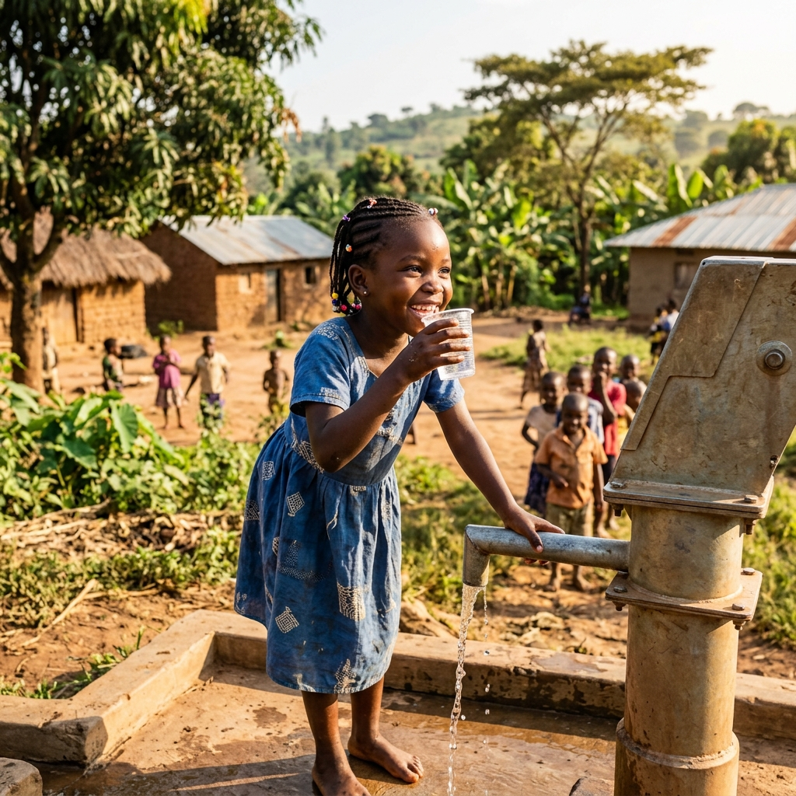
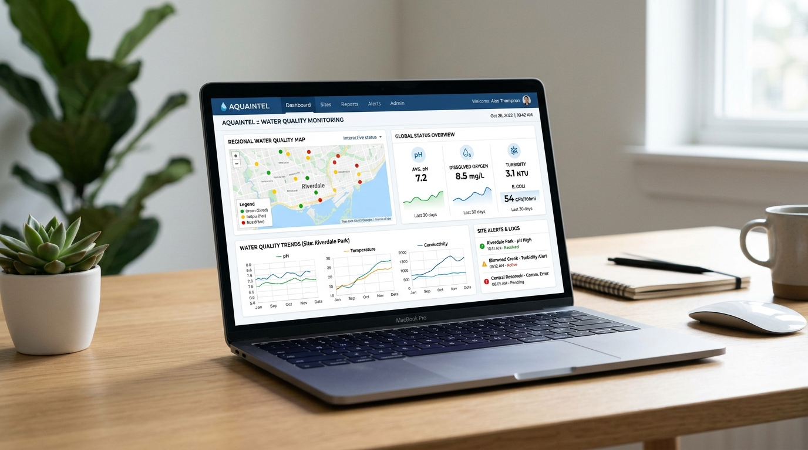

HydraPure monitors, analyzes and helps manage rural water sources to ensure every village has access to safe and healthy drinking water.

People Benefited
Across rural Jharkhand
Water Stations
Monitored in real-time
Early Issue Detection
For safer communities
Our Commitment
To clean and safe water
From monitoring to alerts, HydraPure provides end-to-end support for safer water management.
Track key parameters like pH, TDS, turbidity and more.
Get notified about unsafe water conditions early.
Visualize trends and make informed decisions.
View all water stations on an interactive map.
Maintain logs for transparency and action.
A powerful dashboard to monitor water quality, track station health, view alerts and take action — anytime, anywhere.
Explore Dashboard →
From data to action — a simple and effective process.
Collect real-time data from water stations.
Evaluate water quality using set standards.
Notify authorities about potential risks.
Enable timely intervention and follow-up for safe water supply.
Empowering the people who make change happen.
Safer and healthier lives.
Better monitoring and faster action.
Tools to respond efficiently.
Sustainable water for generations.
Let's build safer, stronger and healthier communities together.
Get Started →